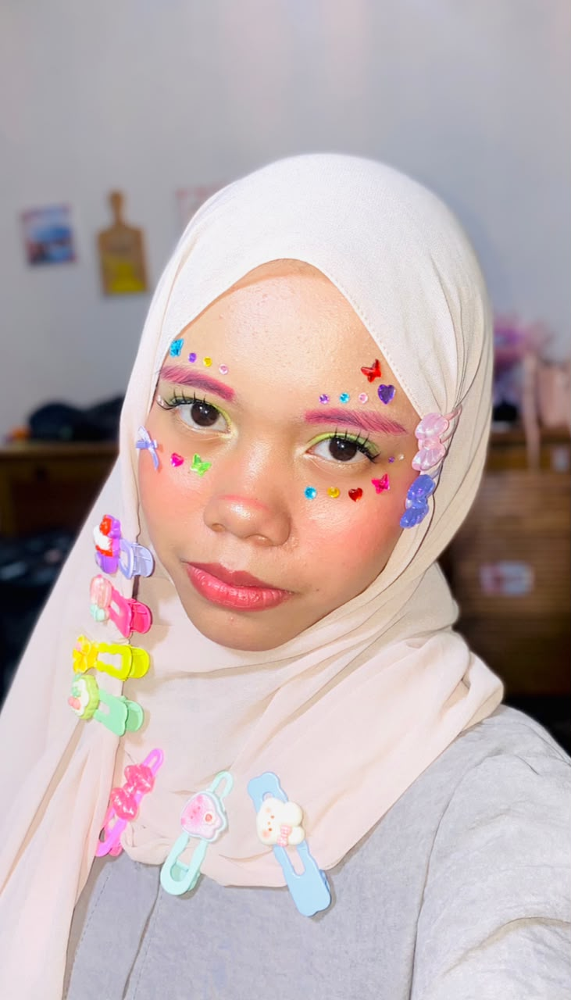

👋 Halo, Saya
Siswa & Calon Pengembang Web
Saya siswi SMK Swasta Mandiri jurusan RPL. Saya belajar membuat halaman web yang cantik, rapi, dan bermanfaat. Selalu ingin belajar hal baru dan tidak mudah menyerah 💜

Saya Sakira Humaira Putri Dermadi, siswi SMK Swasta Mandiri jurusan Rekayasa Perangkat Lunak (RPL). Saya tertarik mempelajari cara membuat tampilan web yang indah dan mudah digunakan. Saya senang belajar hal baru, rajin, teliti, dan selalu berusaha memberikan hasil terbaik.
Melalui proses belajar, saya menyusun halaman web ini menggunakan HTML dan CSS. Saya ikut menentukan tata letak, memilih warna, dan menyusun isinya sebaik mungkin — sebagai langkah awal saya dalam dunia pemrograman.
Melaksanakan Praktik Kerja Lapangan yang melatih kedisiplinan, tanggung jawab, dan kemampuan bekerja sama dengan orang lain.
Aktif mengikuti kegiatan sekolah dan organisasi yang melatih kepercayaan diri, kepemimpinan, serta kebersamaan dengan teman-teman.
• HTML — menyusun kerangka halaman
• CSS — mengatur warna, huruf & tata letak
• Membuat tampilan rapi di HP & komputer
• Microsoft Word — menyusun dokumen
• Microsoft Excel — mengolah data
• Microsoft PowerPoint — membuat presentasi
✅ Teliti dan rajin
✅ Mudah diajarkan
✅ Tidak mudah menyerah
✅ Senang bekerja sama dalam tim
📧 sakirahumaira3@gmail.com
📱 0831-8293-2185